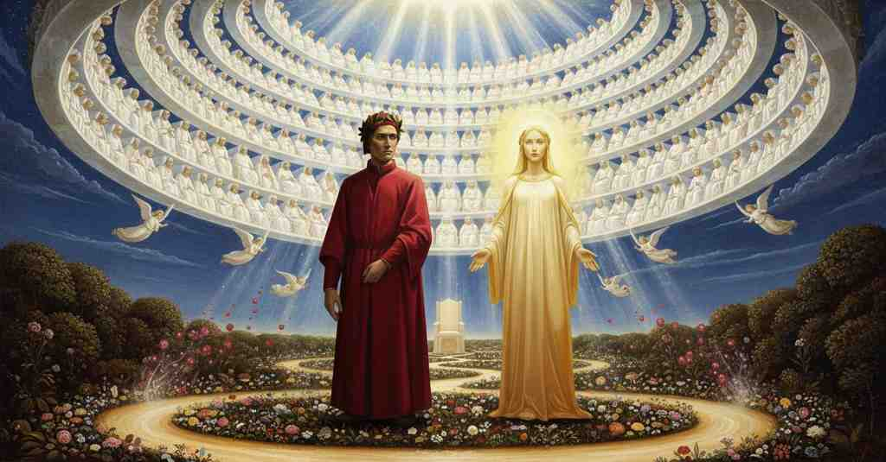

Paradiso — Canto 30

Riassunto Summary 要約
Giunto nell'Empireo, Dante vede un fiume di luce trasformarsi nella rosa celeste dei beati, dove Beatrice gli mostra il seggio destinato a Enrico VII e profetizza la condanna di papa Clemente V.
Having arrived in the Empyrean, Dante sees a river of light transform into the celestial rose of the blessed, where Beatrice shows him the throne destined for Henry VII and prophesies the damnation of Pope Clement V.
至高天に到着したダンテは、光の川が福者たちの天上の薔薇へと変容するのを目にし、そこでベアトリーチェは彼にハインリヒ7世の玉座を示し、教皇クレメンス5世の断罪を予言する。
Segmento 1 1–33
Come le stelle svaniscono all'alba, così il trionfo degli angeli scompare lentamente dalla vista di Dante. Egli si rivolge allora a Beatrice e si trova di fronte a una bellezza che supera non solo tutto ciò che ha scritto finora, ma che crede possa essere compresa appieno solo dal suo Creatore. Ammette di essere sconfitto, più di quanto lo sia mai stato un poeta di fronte al proprio tema, e dichiara che il suo canto deve ora desistere dal seguire la bellezza di lei, avendo raggiunto il limite ultimo della sua arte.
Just as the stars vanish at dawn, the triumph of the angels slowly disappears from Dante's sight. He then turns to Beatrice and is faced with a beauty that surpasses not only all he has written so far, but which he believes can be fully understood only by her Creator. He admits defeat, more than any poet has ever been by their subject, and declares that his song must now cease from following her beauty, having reached the ultimate limit of his art.
夜明けに星が消えるように、天使たちの凱旋もまた、ダンテの視界からゆっくりと消えていく。そこで彼はベアトリーチェに向き直るが、彼女の美しさは、これまで彼が書いてきたすべてを凌駕するだけでなく、彼女の創造主のみが完全に理解できるものだと信じるほどのものだった。彼は、いかなる詩人も自らの主題にこれほど圧倒されたことはないだろうと敗北を認め、自らの詩作が芸術の究極の限界に達したため、もはや彼女の美しさを追いかけるのをやめなければならないと宣言する。
Segmento 2 34–69
Dante, dichiarando di dover lasciare la descrizione della bellezza di Beatrice a una penna più grande, ascolta mentre lei annuncia il loro arrivo nell'Empireo, il cielo di pura luce. Qui, dice lei, vedrà entrambe le milizie del paradiso, e i beati nell'aspetto che avranno al Giudizio Universale. Un lampo di luce accecante avvolge Dante, e viene spiegato che questo è un saluto divino che prepara la sua vista. La sua capacità visiva viene potenziata a un livello sovrumano, e vede un fiume di luce tra due rive fiorite. Da questo fiume emanano faville vive (angeli) che si posano sui fiori (i beati), per poi rituffarsi nel fiume in un ciclo continuo.
Dante, declaring that he must leave the description of Beatrice's beauty to a greater pen, listens as she announces their arrival in the Empyrean, the heaven of pure light. Here, she says, he will see both militias of paradise, and the blessed in the form they will have at the Last Judgment. A flash of blinding light envelops Dante, and it is explained that this is a divine welcome that prepares his sight. His visual capacity is enhanced to a superhuman level, and he sees a river of light between two flowering banks. From this river emanate living sparks (angels) that alight on the flowers (the blessed), only to plunge back into the river in a continuous cycle.
ダンテは、ベアトリーチェの美しさを描写することはより偉大な詩人に委ねなければならないと宣言し、彼女が純粋な光の天である至高天への到着を告げるのを聞く。ここで彼は、天国の二つの軍団、そして最後の審判の時の姿をした祝福された魂たちを見ることになる、と彼女は言う。目も眩むような閃光がダンテを包み、これが彼の視力を整えるための神々しい歓迎なのだと説明される。彼の視力は超人的なレベルにまで高められ、花咲く二つの岸辺の間を流れる光の川を見る。この川からは生きた火花（天使）が発せられ、花々（祝福された魂）に舞い降りては、絶え間ない循環の中で再び川に飛び込んでいく。
Segmento 3 70–99
Beatrice spiega a Dante che per saziare il suo desiderio di conoscenza, deve prima bere dall'acqua del fiume di luce. Aggiunge che il fiume, le faville e i fiori sono solo "umbriferi prefazi" (prefazioni ombrose) della loro vera realtà, un'imperfezione dovuta non a loro stessi ma al suo difetto di vista. Con l'ansia di un neonato, Dante si china sull'onda e vi bagna le palpebre. Immediatamente, la visione si trasforma: il fiume da lineare diventa circolare, e i fiori e le faville, come persone che si tolgono una maschera, rivelano le loro vere forme. Dante vede così manifestarsi entrambe le corti del cielo, quella degli angeli e quella dei beati, e prega Dio di dargli la forza di descrivere l'alto trionfo a cui ha assistito.
Beatrice explains to Dante that to satisfy his desire for knowledge, he must first drink from the water of the river of light. She adds that the river, the sparks, and the flowers are only "umbriferi prefazi" (shadowy prefaces) of their true reality, an imperfection due not to themselves but to his defective sight. With the eagerness of a baby, Dante leans over the wave and wets his eyelids in it. Immediately, the vision transforms: the river changes from linear to circular, and the flowers and sparks, like people taking off a mask, reveal their true forms. Dante thus sees both courts of heaven made manifest, that of the angels and that of the blessed, and he prays to God to give him the strength to describe the high triumph he has witnessed.
ベアトリーチェはダンテに、知への渇望を満たすためには、まず光の川の水を飲まなければならないと説明する。川と火花と花は、それらの真の姿の「影ある序章」に過ぎず、その不完全さは事物自体にあるのではなく、彼の視力の欠陥によるものだと付け加える。乳飲み子のような熱心さで、ダンテは波に身をかがめ、その水でまぶたを濡らす。すると即座に光景は変容する。川は直線から円形になり、花と火花は、まるで仮面を外した人のように、その真の姿を現す。こうしてダンテは、天使たちと福者たちの、天国の二つの宮廷が明らかにされるのを目にし、自らが見た高貴な凱旋を描写する力を与えてくれるよう神に祈る。
Segmento 4 100–123
Esiste una luce divina che si estende in forma circolare, un raggio riflesso dalla cima del Primo Mobile, la cui circonferenza è assai più grande di quella del sole. In questa luce, come un colle si specchia nell'acqua, Dante vede riflessi in più di mille gradini tutti i beati, che formano una vastissima rosa celeste. Nonostante l'immensa ampiezza e altezza, la sua vista non si perde ma coglie l'intera magnificenza, perché dove Dio governa direttamente, le leggi fisiche come la distanza non hanno alcun valore.
There is a divine light that extends in a circular form, a ray reflected from the summit of the Primum Mobile, whose circumference is far greater than that of the sun. In this light, as a hill is mirrored in water, Dante sees reflected in more than a thousand tiers all the blessed, who form a vast celestial rose. Despite the immense breadth and height, his sight is not lost but grasps the entire magnificence, because where God governs directly, physical laws such as distance have no value.
円形に広がる神の光がある。それは第一動天の頂点から反射した光線であり、その円周は太陽よりもはるかに大きい。丘が水面に映るように、ダンテはこの光の中に、千以上の階層をなすすべての福者たちが映し出され、広大な天上の薔薇を形作っているのを見る。その計り知れない広さと高さにもかかわらず、彼の視界は失われることなくその壮大さの全体を捉える。なぜなら、神が直接統治する場所では、距離といった物理法則は何の意味も持たないからである。
Segmento 5 124–148
Beatrice conduce Dante nel centro della rosa sempiterna, mostrandogli la vastità della città celeste e i suoi seggi quasi tutti occupati. Gli indica un grande trono vuoto, già incoronato, destinato all'anima dell'alto Arrigo (Enrico VII), che verrà per cercare di raddrizzare l'Italia prima che essa sia pronta. Beatrice profetizza che la cieca cupidigia farà sì che gli italiani lo respingano, come un bambino che muore di fame ma caccia la balia. Aggiunge che il papa di allora (Clemente V) tradirà Enrico e per questo sarà condannato da Dio all'inferno tra i simoniaci, spingendo ancora più in basso il suo predecessore, Bonifacio VIII.
Beatrice leads Dante into the center of the eternal rose, showing him the vastness of the celestial city and its almost completely filled seats. She points out a great empty throne, already crowned, destined for the soul of the high Henry (Henry VII), who will come to try to set Italy straight before it is ready. Beatrice prophesies that blind greed will cause the Italians to reject him, like a child who dies of hunger but pushes away his wet nurse. She adds that the pope of that time (Clement V) will betray Henry and for this will be condemned by God to Hell among the simonists, pushing his predecessor, Boniface VIII, even deeper.
ベアトリーチェはダンテを永遠の薔薇の中心へと導き、天上の都の広大さと、その座席がほとんどすべて埋まっていることを見せる。彼女は、すでに冠が置かれた壮大な空の玉座を指し示す。それは、イタリアの準備が整う前にその道を正そうとやって来る、気高きハインリヒ7世の魂のために用意されたものである。ベアトリーチェは、盲目的な貪欲さが原因で、イタリア人たちが彼を拒絶するだろうと予言する。それは、飢えで死にかけていながら乳母を追い払う赤子のごとくである。さらに、当時の教皇（クレメンス5世）がハインリヒ7世を裏切り、そのために神によって地獄の聖職売買者のもとへ堕とされ、その前任者ボニファティウス8世をさらに深く押し込むだろうと付け加える。